CSA LUNAR NEW YEAR GALA
CSA LUNAR NEW YEAR GALA
REBECCA (REVI) CHENG
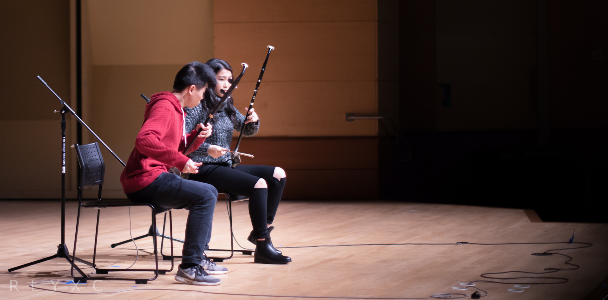 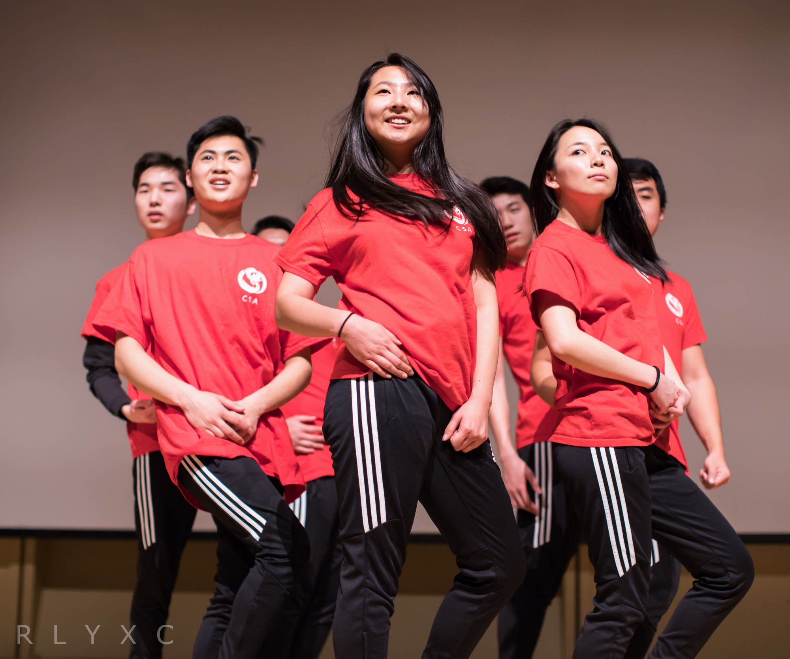
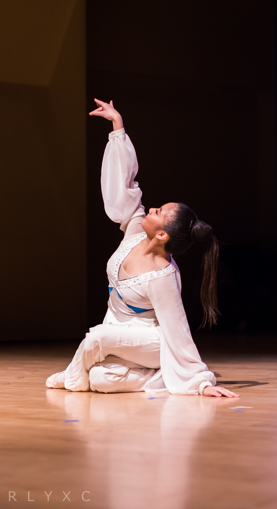
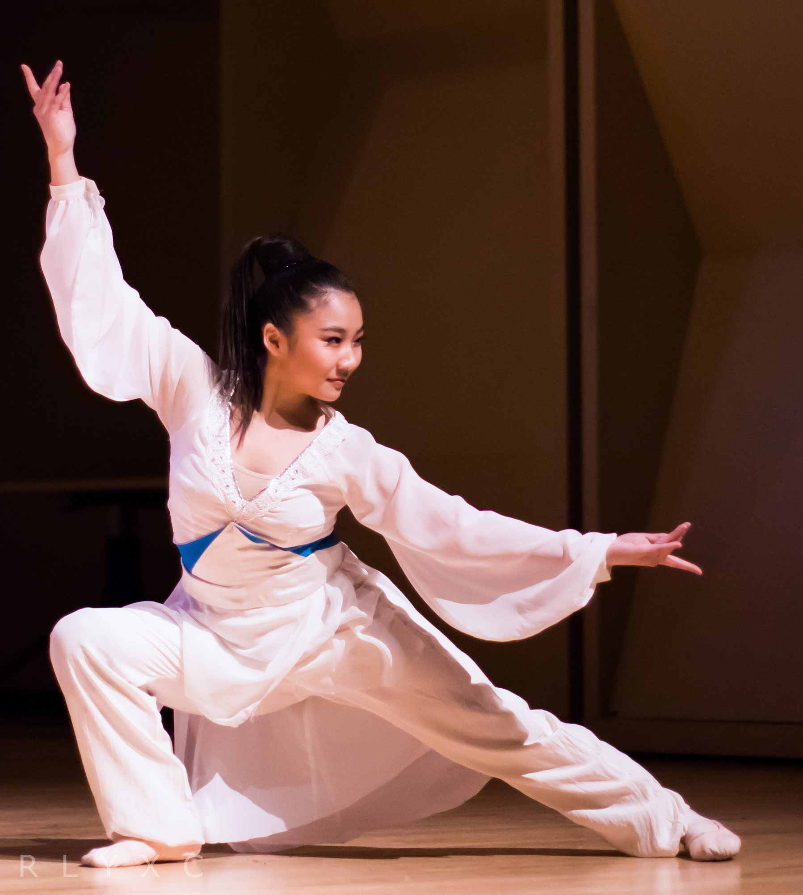
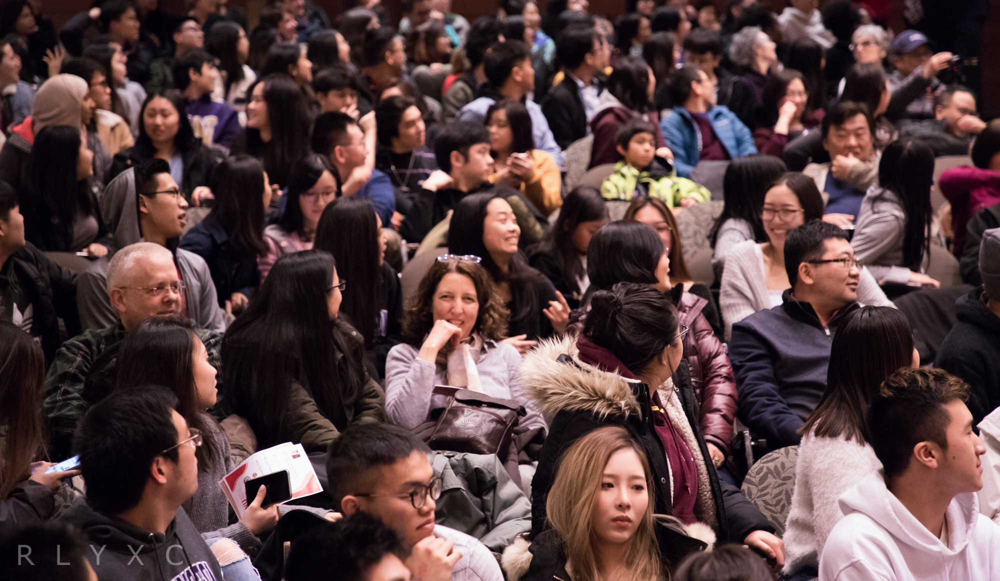
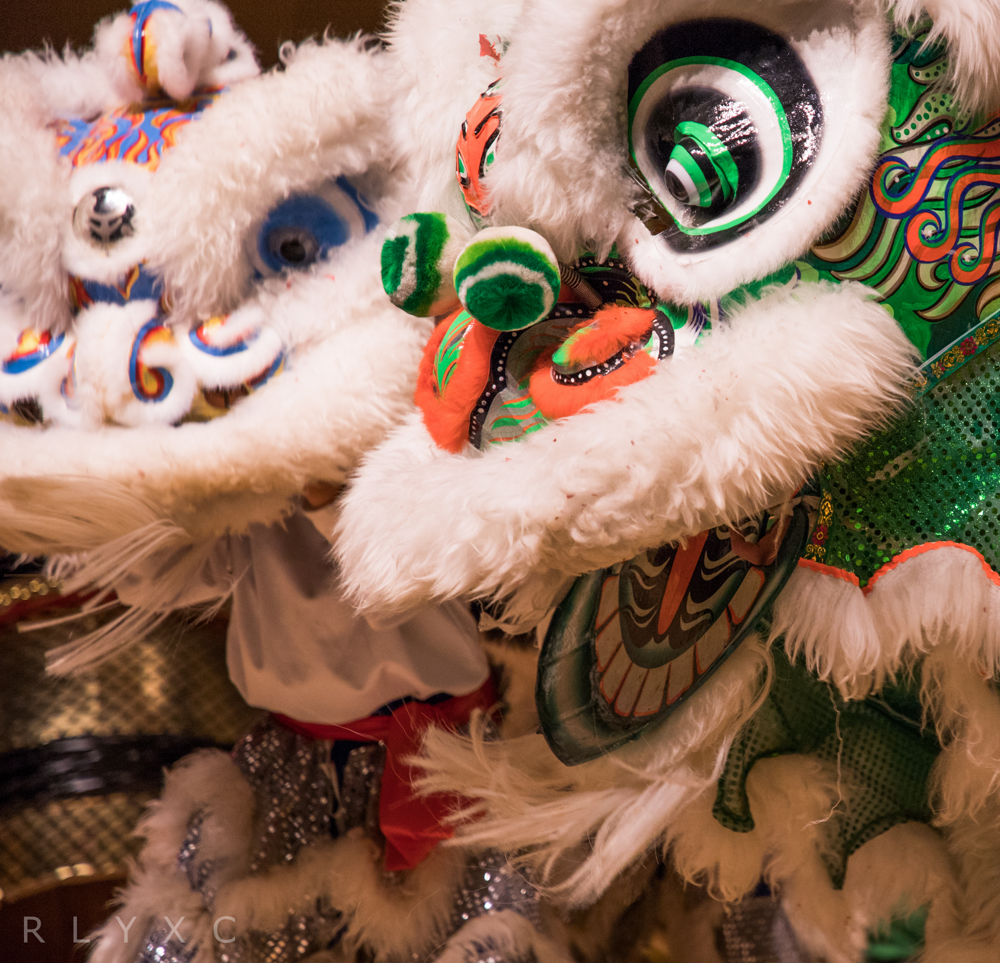
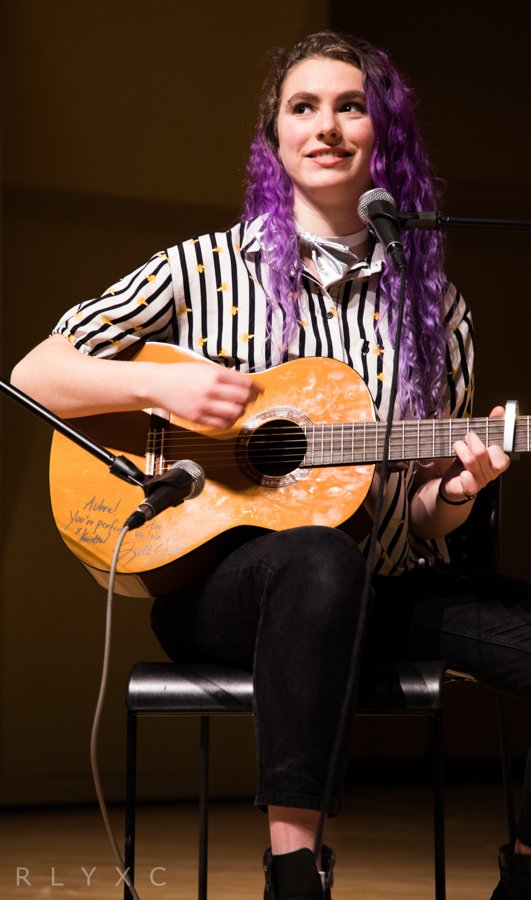
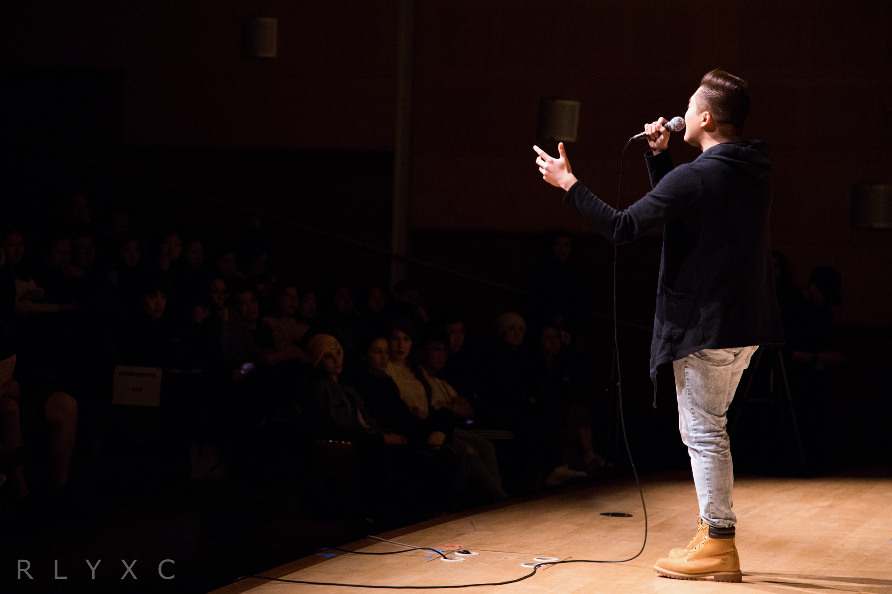
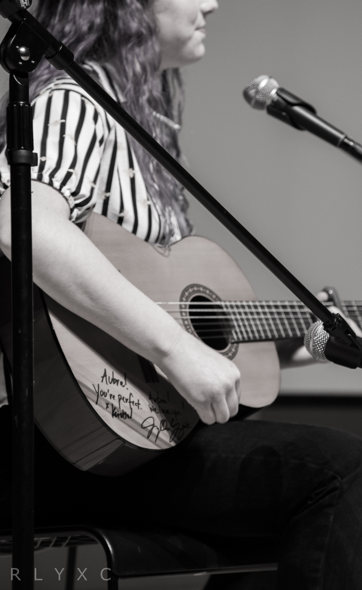
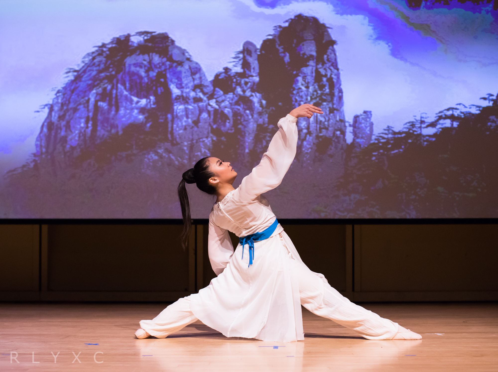
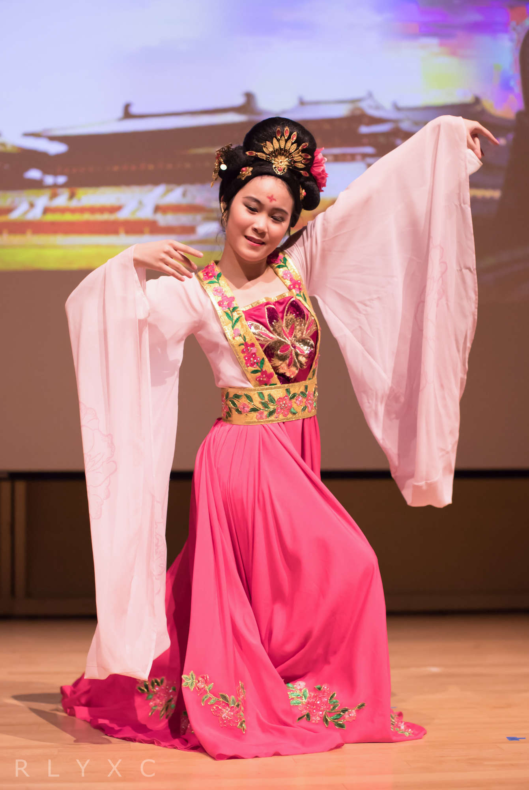
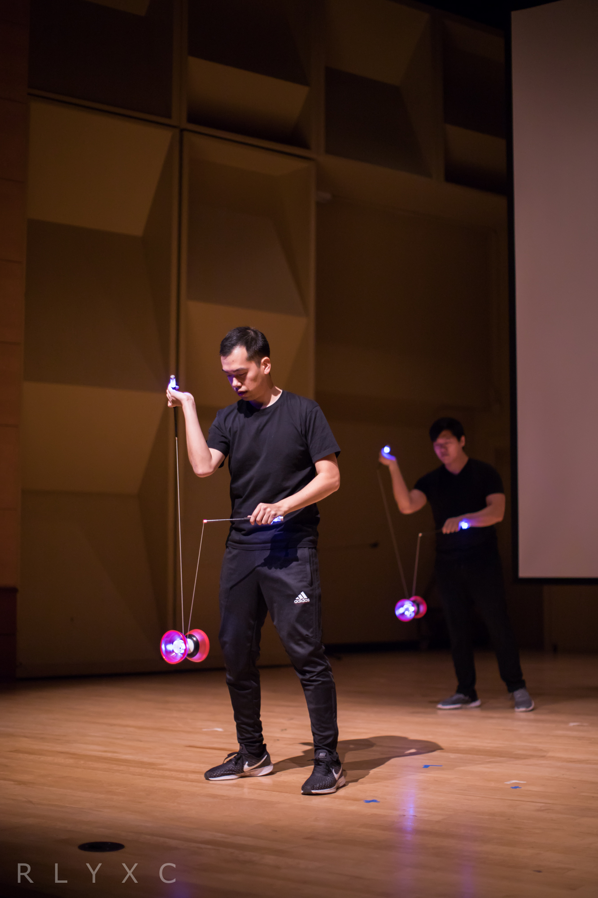
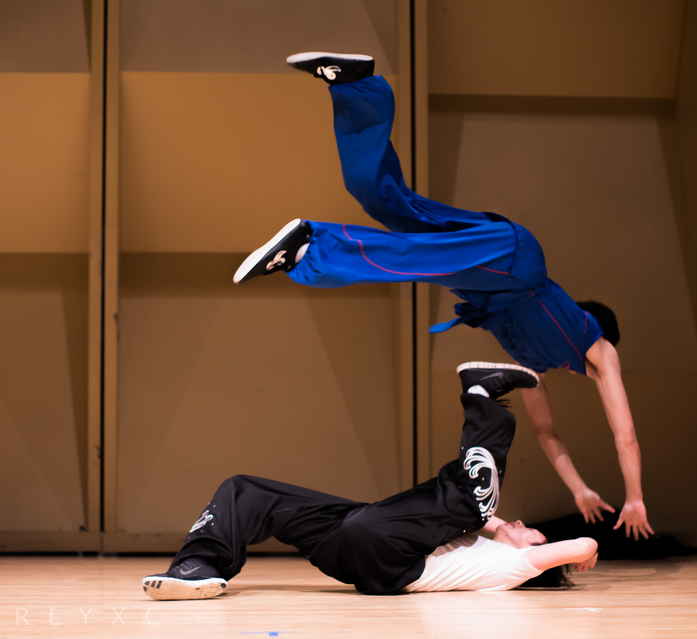
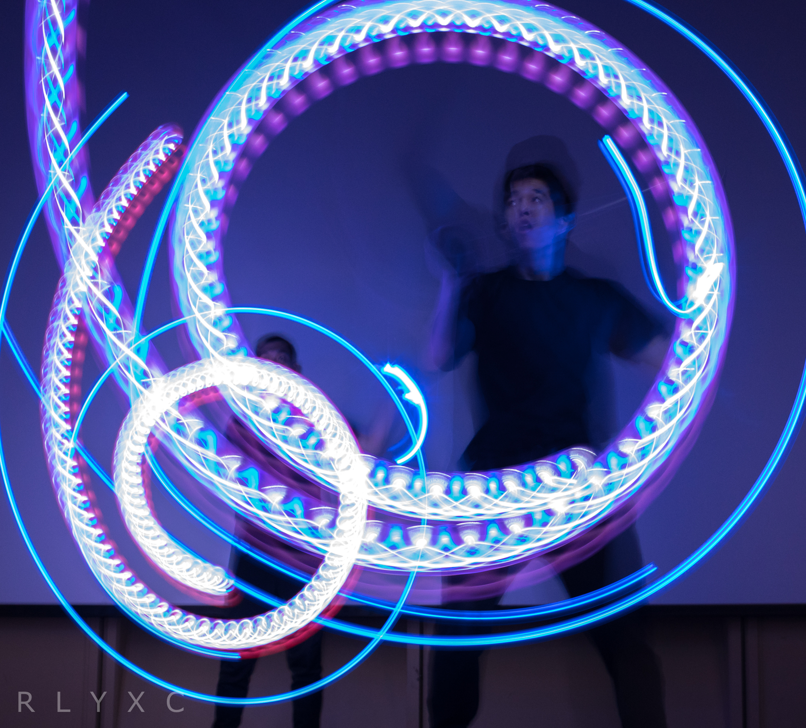
All photos were taken at the
CSA 52nd Annual Lunar New Year Gala
as part of the
Chinese Student Association
at the
University of Washington